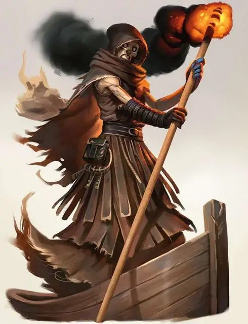

Мерренолот
Merrenoloth
Среднее Исчадие (Юголот), нейтрально-злое

Класс Доспеха 13
Хиты 40 (9к8)
Скорость 30 футов, плавая 40 футов
| мод | спас | ||
|---|---|---|---|
| СИЛ | 8 | −1 | −1 |
| ЛОВ | 17 | +3 | +5 |
| ТЕЛ | 10 | +0 | +0 |
| мод | спас | ||
|---|---|---|---|
| ИНТ | 17 | +3 | +5 |
| МДР | 14 | +2 | +2 |
| ХАР | 11 | +0 | +0 |
Навыки Восприятие +4, Выживание +4, История +5, Природа +5
Сопротивление урону огонь, холод, электричество; дробящий, колющий, рубящий от немагических атак
Иммунитет к урону кислота, яд
Иммунитет к состояниям отравление
Чувства слепое зрение 60 футов, тёмное зрение 60 футов, пассивное Восприятие 14
Языки Бездны, Инфернальный, Телепатия 60 фт.
Опасность 3 (700 опыта)
Бонус мастерства +2
Среда обитания Побережье
Особенности
Врождённое колдовство. Базовой характеристикой мерренолота является Интеллект (Сл спасброска от заклинания 13). Он может накладывать следующие заклинания, не нуждаясь в материальных компонентах:
• Неограниченно: очарование личности [charm person], тьма [darkness], обнаружение магии [detect magic], рассеивание магии [dispel magic], порыв ветра [gust of wind]
• 3/день: власть над водами [control water]
• 1/день: власть над погодой [control weather]
Сопротивление магии. Мерренолот совершает с преимуществом спасброски от заклинаний и прочих магических эффектов.
Магическое оружие. Атаки оружием мерренолота являются магическими.
Телепортация. Бонусным действием мерренолот может телепортироваться со всем снаряжением, которое он несёт и носит, на расстояние до 60 футов в свободное пространство, которое он может видеть.
Действия
Мультиатака. Мерренолот один раз использует устрашающий взгляд и совершает одну атаку веслом.
Весло. Рукопашная атака оружием: +5 к попаданию, досягаемость 5 фт., одна цель. Попадание: 8 (2к4 + 3) рубящего урона.
Устрашающий взгляд. Мерренолот выбирает целью одно существо, которое может видеть в пределах 60 фт. от себя.
Цель должна преуспеть в спасброске Мудрости Сл 13, иначе станет испуганной мерренолотом на 1 минуту. Испуганная цель может повторять спасбросок в конце каждого своего хода, завершая эффект в случае успеха.
Логово
Любой корабль, с которым мерренолот заключает договор на становление капитаном судна, автоматически становится логовом существа. При сражении на корабле, мерренолот может использовать действия логова.
Действия логова
При значении инициативы «20» (проигрыш при ничье), мерренолот может предпринять одно действие логова для создания одного из нижеследующих эффектов; он не может использовать один и тот же эффект два раза подряд.
• Корабль восстанавливает 22 (4к10) хитов.
• Сильный ветер подгоняет корабль, увеличивая скорость корабля на 30 фт. до достижения в следующем раунде, значения инициативы 20.
• На расстоянии 60 фт. вокруг корабля образуются вьющие ветра. Пока в следующем раунде инициатива не достигнет 20, эта область считается труднопроходимой местностью, и когда среднее или меньшее существо входит в эту область, или начинает свой раунд, будучи на лету, оно должно преуспеть в спасброске Силы Сл 13, иначе будет сбито с ног.
Местные эффекты
Мерренолот наполняет судно мощной магией, создавая один или несколько из нижеследующих эффектов:
• Корабль не тонет, даже если в корпусе пробоины.
• Корабль всегда держит курс до места назначения, указанного мерренолотом.
• Существа, по выбору мерренолота, которые находятся на корабле не испытывают дискомфорта от ветра или погоды, этот эффект не защищает от урона.
Если мерренолот умирает, эти эффекты пропадают в течении 1к6 часов.
Описание
Мрачные, сухопарые капитаны паромов на реке Стикс, мерренолоты обладают полной властью над своими судами, гарантируя, что их пассажиры безопасно достигнут своей цели. Иногда мерренолотов можно уговорить покинуть Нижние Планы и взять командование над другим судном, обеспечив этим защиту корабля и экипажа.
Всякий раз, когда мерренолот заключает капитанский контракт на судно, он связывается с судном, чтобы быть уверенным, что во время путешествия всё будет так, как нужно. Мерренолот может безопасно вести своё судно через абсолютно любой шторм, всегда оставаясь на прежнем курсе, и не встречаясь с кучей проблем, что мешают прочим капитанам.
Мерренолот может постоять за себя в бою, но предпочитает по возможности, избегать боя. На самом деле, он всегда указывает в контракте, что не обязан вступать в бой. Первая обязанность мерренолота – его судно.